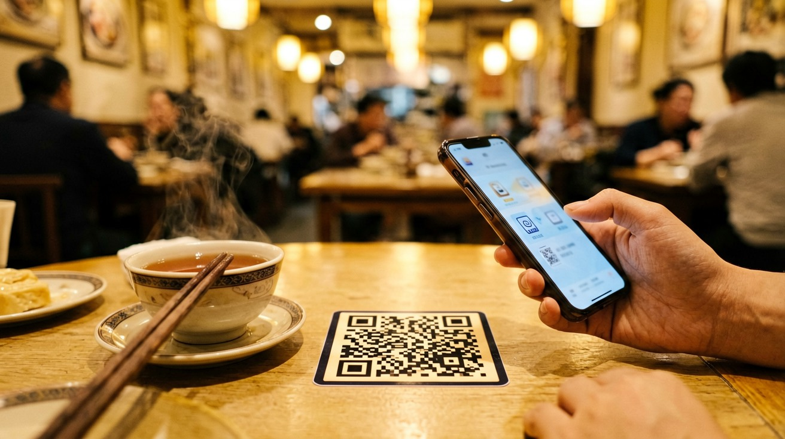
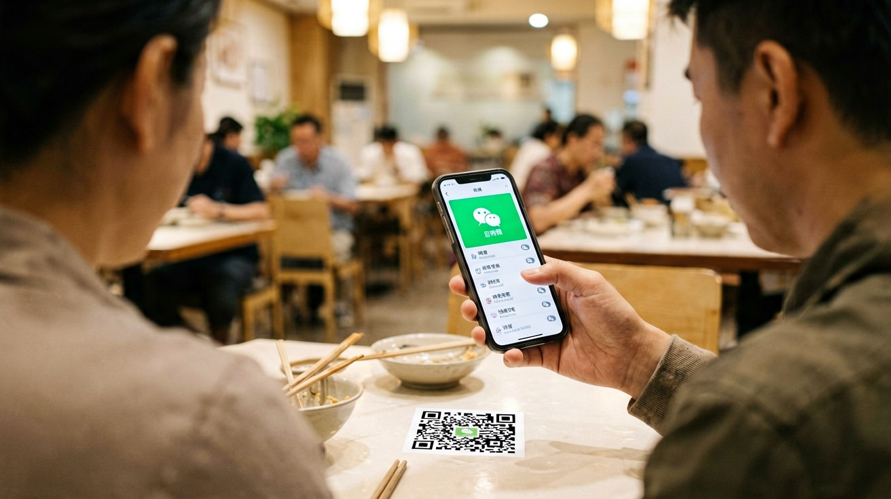
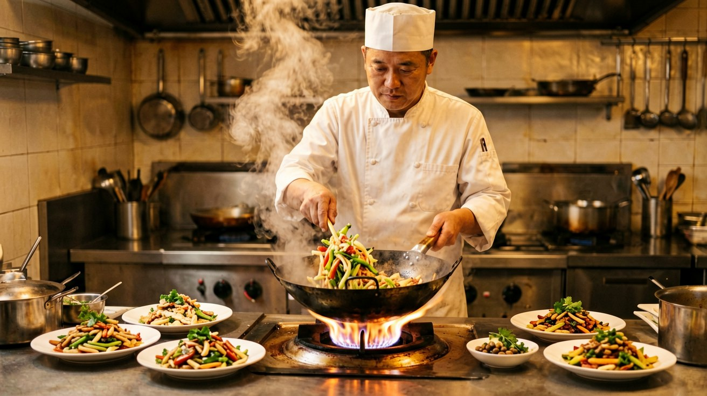
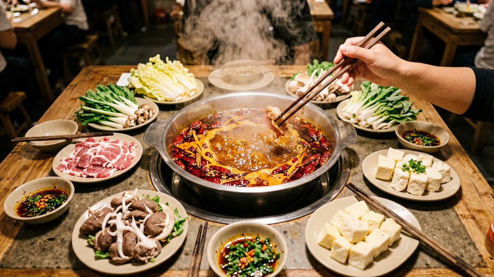
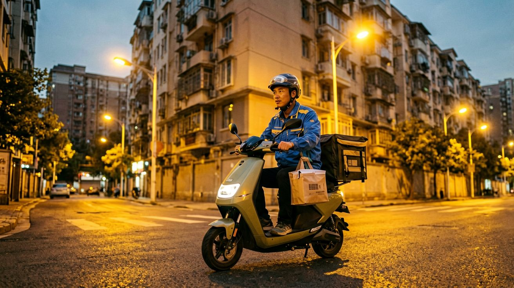

Last updated: June 2026.
You walk into a restaurant in China. There is no menu on the table. No server approaches you. Instead, a small QR code is taped to the corner of the table. Everyone around you is tapping their phones, and food keeps arriving. If you do not know the scan-to-order system, a simple meal can become an awkward standoff. This article walks you through every way to get food in China — from scanning a table code to ordering delivery to your hotel room.

In most Chinese restaurants, ordering works like this: sit down, open WeChat or Alipay, scan the QR code on the table, and a menu appears inside the app. You tap items to add them to your order, hit confirm, and the kitchen starts cooking. No server, no paper menu, no waiting.
The scan-to-order menu is almost always in Chinese. Here is how to navigate it in practice. First, scan the code with WeChat — WeChat's scan-to-order system is more widely used than Alipay's. Once the menu loads, look for these key interface elements: the dish name, usually accompanied by a small thumbnail photo; the price in RMB; and an "add" or "+" button. The Chinese word 加入 (jiārù) means "add to order." 下单 (xiàdān) means "place order." 结算 (jiésuàn) means "checkout." Tap your way through the menu, using photos as your guide. When you are ready, tap 下单 or 结算.
Some restaurants also let you order through the Alipay or WeChat mini-program before arriving. Search for the restaurant name in the app, find its mini-program, and pre-order. This is especially useful for popular hot pot chains like Haidilao, where wait times can exceed an hour. If the QR code menu does not load or fails to recognise your foreign-registered app, flag down a server and ask for a 纸质菜单 (zhǐzhì càidān) — a paper menu. Most mid-range and higher-end restaurants have one, even if they do not offer it by default.

You do not need to learn Chinese to eat well. You need a strategy. Here are the menu words that unlock most restaurant experiences.
Dish categories. Chinese menus are organised by ingredient and cooking method, not by starter-main-dessert. Look for these headings: 肉 (ròu) — meat, 鸡 (jī) — chicken, 鱼 (yú) — fish, 虾 (xiā) — shrimp, 蔬菜 (shūcài) — vegetables, 豆腐 (dòufu) — tofu, 主食 (zhǔshí) — staples (rice, noodles, dumplings), 汤 (tāng) — soup, and 凉菜 (liángcài) — cold dishes.
Cooking methods. Knowing a few common preparation terms helps you judge what will arrive on the plate. 炒 (chǎo) — stir-fried, 炸 (zhá) — deep-fried, 蒸 (zhēng) — steamed, 煮 (zhǔ) — boiled, 烤 (kǎo) — roasted or grilled, 红烧 (hóngshāo) — braised in soy sauce (rich, savoury, slightly sweet), 麻辣 (málà) — numbing and spicy (the Sichuan signature).
Practical approach. Open a translation app — Pleco or Google Translate with the camera function — and point your phone at the menu. It will not be perfect, but "stir-fried beef with green pepper" is enough information to order confidently. For unfamiliar dishes, search the Chinese name plus "dish" in your browser and look at image results. And when in doubt, pointing at a photo on the menu or at what another table is eating works everywhere in the world.

Beyond scan-to-order, Alipay and WeChat serve as gateways to entire restaurant ecosystems. Many major chains — Haidilao hot pot, Xiabu Xiabu, Luckin Coffee, Heytea — operate primarily through their mini-programs. You find the restaurant's mini-program by searching its name in Alipay or WeChat, then you can browse the full menu, customise orders, pay, and even join a virtual queue before you arrive.
One significant advantage for you: mini-programs from large chains are far more likely to include English translations and food photos compared to physical menus. The payment is handled directly through Alipay or WeChat Pay, so your linked foreign card works immediately. For smaller independent restaurants, stick with the scan-to-order QR code or ask for a paper menu.
If you are in a food court or a restaurant cluster where multiple vendors operate under one roof, look for a central ordering screen or a shared QR code that lets you order from multiple kitchens in one checkout. This is common in shopping mall food courts.

Food delivery in China is fast, cheap, and covers almost every restaurant within a 5-kilometre radius. The two dominant platforms are Meituan and Ele.me. Both are integrated into Alipay and WeChat — you do not need to download separate apps. Open Alipay, search for Meituan or Ele.me, and the mini-program loads inside the app.
Here is the reality for a foreign user: both platforms have Chinese-only interfaces. Navigating them requires either patience with a translation app or the help of a Chinese-speaking friend. The basic flow is the same as Western delivery apps: set your delivery address, browse restaurants, add items, pay, and track your order. Delivery fees are typically 3 to 8 RMB, and a rider on an electric scooter usually arrives within 30 to 45 minutes.
The key challenge is entering your delivery address in Chinese. Have your hotel write the address in Chinese characters on a card. When you order, type or paste this address into the delivery field. Some hotels will accept deliveries at the front desk for you — ask at check-in. A practical tip: order from well-known chain restaurants that display English or pinyin names alongside Chinese, since their menu photos are recognisable and their food is consistent.
If the language barrier on Meituan or Ele.me feels insurmountable, Sherpa's is an English-language food delivery service operating in Beijing, Shanghai, and several other major cities. The restaurant selection is smaller and prices are higher, but the ordering experience is frictionless.

In local noodle shops, street food stalls, and small family-run restaurants, you will face a menu entirely in Chinese with no photos. This is not a problem to solve — it is an experience to embrace. Here is a practical system.
Point at what others are eating. Walk in, glance at what looks good on nearby tables, and point. Hold up one finger for one portion, two for two. Smile. This works in every small eatery in China.
Learn five dish names. Memorise these and you will never go hungry: 牛肉面 (niúròu miàn) — beef noodle soup, 蛋炒饭 (dàn chǎofàn) — egg fried rice, 饺子 (jiǎozi) — dumplings, 宫保鸡丁 (gōngbǎo jīdīng) — kung pao chicken, and 西红柿炒鸡蛋 (xīhóngshì chǎo jīdàn) — scrambled eggs with tomato (the comfort food of China). Say the name, and a version of that dish will appear.
Use the camera translate function. Google Translate and Pleco both offer live camera translation. Open the app, point your phone at the menu, and rough English translations overlay the Chinese text in real time. It is not elegant, but "braised pork belly" is clear enough.
Embrace the unknown. Some of the best meals in China happen when you order something you cannot identify and it turns out to be remarkable. The system above gives you control when you need it — and the confidence to let go when you do not.
This article is based on platform features and restaurant practices as of June 2026.
Sources
Restaurant practices and app interfaces may change. The Chinese phrases listed above are guides — pronunciation may vary across China.